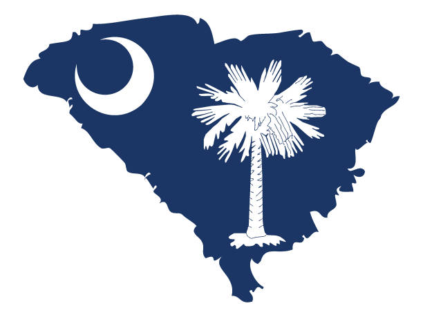

All About South Carolina

- The Carolina Wren, sometimes referred to as the Great Carolina Wren, was adopted as the South Carolina state bird in 1948, replacing the Mockingbird. It can be found in a wide variety of habitats including fields, woodlands, and swamps.
- Yellow jessamine (Gelsemium sempervirens) became our official state flower in March 14,1924. Because it is native to our state, it is also called Carolina jessamine. Other names include trumpet vine, evening trumpet flower, and both yellow jasmine and Carolina Jasmine.
- The Palmetto Tree was designated as the official State Tree by Joint Resolution Number 63 on March 17, 1939. The Palmetto was symbolical of the defeat of the British fleet at Fort Moultrie on Sullivan's Island. The fort was built of Palmetto logs, which absorbed the impact of the cannon balls.
- South Carolina produces more peaches then georgia.
- The current population of South Carolina is 5.2 million.
- Columbia is the capital of South Carolina.
- The South Carolina govenor is Henry McMaster.